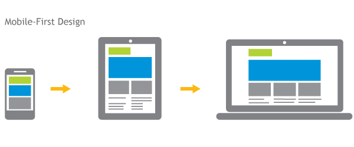
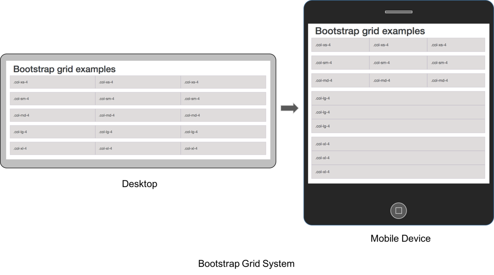

UX Strategy and Framework
Mobile First
We found lots of the interactions on desktop do not have equivalent interactions on mobile devices. For example, mobile devices do not have hover states while desktop uses very often; horizontal scroll is more frequently used on mobile than desktops. Therefore, we decided to adopt the mobile-first design strategy.
Responsiveness and Grid System
We should not design for devices but design for screens. The web app was developed in 2007 without consideration of mobile devices, so now we need a grid system that smoothly tranforms the product across different screen sizes, no matter it's a 1440-pixel HD desktop screen or a 375-pixel iPhone 6 screen. We should cover them all.
Customizable Card UI System
Card UI system is maybe the hottest UX pattern in 2015, and we decided to utilize it as well. We have many users that use the product differently and each piece of information has different relevance to different users. By adopting the card system, we can allow greater level of personalization. Users can hide/add cards, and position them anyway they like.
Simplicity and Consistency

The product needs to be simple to use so that users can benefit from our product immediately after purchase. We should define our visual language so that users know what color indicates what type of information. Also, the interface needs to be clean and clear.